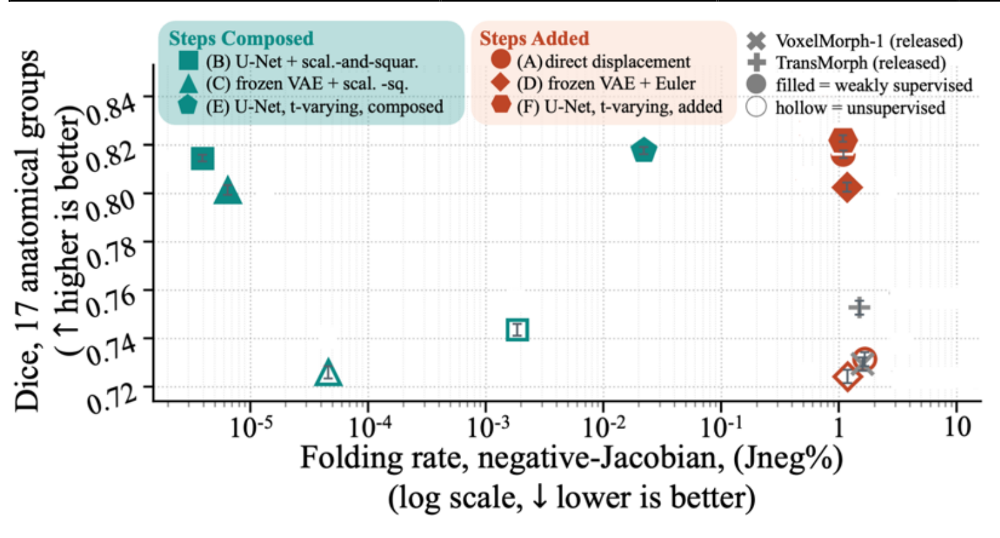

給只修過基礎微積分和統計的讀者：為什麼「Dice 又高了一點」常常不是模型設計的功勞，以及怎麼用控制變因的實驗，找出真正讓變形保持合理的那個因素。
標著 原文 的區塊是論文裡對應的英文句子；標著 進階 的區塊有公式，第一次讀可以先跳過。
配準（registration）的論文通常長這樣：提出新架構，在公開資料集上量 Dice，然後和別人發表的數字比，高就是進步。問題是，一個 Dice 數字背後藏著很多不寫在表格裡的選擇：
這些選擇每一個都會讓 Dice 動好幾個百分點。如果兩篇論文選得不一樣，高的那個高在哪裡，根本說不清楚。
所以做法反過來：不去提新架構，而是鎖定一個評測協議、一份訓練食譜，一次只改變一個因素（這叫消融實驗，ablation），看每個因素到底值多少。論文的四個貢獻：
配準是把一張影像「揉」成另一張的樣子。這篇的設定叫 atlas-to-subject：atlas（一張標準腦影像）當作移動影像，每位受試者的 MRI 當作固定影像。網路看到這一對影像，輸出一個形變場，告訴 atlas 上每個體素該移到哪裡；用這個形變場把 atlas 揉過去，再看它的解剖結構跟受試者有沒有對上。
我們用兩把尺來量結果，兩把尺量的是完全不同的東西：
| 尺 | 量什麼 | 越好是 |
|---|---|---|
| Dice | 揉過去的 atlas 標籤，跟受試者的真實標籤重疊多少。準確度 | 越大越好 |
| 折疊率 Jneg | 形變場裡有多少比例的體素，局部體積倍率 ≤ 0。變形合不合理 | 越小越好 |
評測細節：IXI 腦 MRI，去顱骨、已仿射對齊，160×192×224 體素、1 mm。576 位受試者分成 403 訓練、58 驗證、115 測試。FreeSurfer 標籤整理成 46 類；Dice 是左右對稱結構先平均，再對官方的 17 個解剖群組取平均。
對某個結構，設揉過去的 atlas 標籤區域為 \(A\)、受試者真實標籤區域為 \(B\)：
\[\mathrm{Dice}(A,B)=\frac{2\,|A\cap B|}{|A|+|B|}.\]形變 \(\varphi(\mathbf{x})=\mathbf{x}+\mathbf{u}(\mathbf{x})\) 在 \(\mathbf{x}\) 附近的局部體積倍率，是它的 Jacobian 矩陣的行列式 \(\det D\varphi=\det(I+\nabla\mathbf{u})\)。大於 1 是局部膨脹、介於 0 到 1 是壓縮；小於 0 代表這一小塊空間被翻面。折疊率就是
\[J_{\mathrm{neg}}=\frac{\#\{\mathbf{x}:\det D\varphi(\mathbf{x})\le 0\}}{\#\text{所有體素}}\times 100\%.\]一維的情況最好想：\(\varphi(x)=x+u(x)\) 的 Jacobian 是 \(1+u'(x)\)。只要位移 \(u\) 在某處的斜率比 −1 還陡，\(\varphi\) 就不再單調遞增，也就是「走過頭、折回來」。lesson 7 的示範用的就是這個一維版本。
在訓練任何模型之前，我們先確認自己寫的評測程式量出來的數字，和官方的一模一樣。三個檢查：
| 方法 | 我們重算 | 原論文發表 |
|---|---|---|
| Affine（不變形） | 0.3858 | 0.386 |
| SyN (ANTs) | 0.6445 | 0.645 |
| VoxelMorph-1 | 0.7293 | 0.729 |
| TransMorph | 0.7527 | 0.753 |
這一步看起來很無聊，卻是整篇可信度的地基。如果尺本身不準，後面所有「A 比 B 高 0.01」都沒有意義。
所有模型共用同一份訓練食譜：損失函數、優化器、100 個 epoch、選驗證集 Dice 最高的檢查點、測試集只評估一次。唯一不同的是被研究的因素。
弱監督的 soft-Dice 項只出現在損失裡，標籤不會輸入網路，所以推論時仍然只需要一對影像。六個架構：
| 代號 | 模型 | 預測什麼 | 步驟怎麼合併 |
|---|---|---|---|
| A | VoxelMorph-1（U-Net） | 直接預測位移場 | 不適用 |
| B | A 加上 scaling and squaring | 穩態速度場 | 合成（2⁷ 次自我合成） |
| C | 凍結 VAE 編碼器 ＋ S&S | 穩態速度場（半解析度） | 合成 |
| D | 凍結 VAE 編碼器 ＋ Euler | 時變速度場，10 步 | 相加 |
| E | U-Net，時變 | 時變速度場，5 步 | 合成 |
| F | U-Net，時變 | 時變速度場，5 步 | 相加 |
A 到 D 各訓練有／無監督兩種，共 8 個模型；E 和 F 只做弱監督，共 10 個。為什麼要加 E 和 F？因為 C 和 D 同時差了兩件事（速度場是穩態還是時變、步驟是合成還是相加），單看 C vs D 分不出是哪一個造成的。E 和 F 用同一個 U-Net、同樣的參數量（278,707）和步數，只差合併規則，把這兩個因素拆開。
如果網路直接輸出位移場 \(\mathbf{u}\)，形變是 \(\varphi=\mathrm{id}+\mathbf{u}\)，沒有任何東西保證它可逆。另一條路是讓網路輸出一個穩態速度場 \(v\)，把它想成一條河的流速，把 atlas 上的每個點丟進河裡漂 1 單位時間：
\[\frac{\partial\varphi_t}{\partial t}=v(\varphi_t),\qquad \varphi_0=\mathrm{id},\qquad \varphi=\varphi_1=\exp(v).\]這樣得到的 \(\varphi\) 是一個一參數群作用的結果，理論上必定可逆。實務上用 scaling and squaring 近似指數映射：先縮小 \(v\to v/2^7\)（縮小後幾乎是恆等映射），再把這個映射自己和自己合成 7 次：\(\varphi\leftarrow\varphi\circ\varphi\)，每次相當於把流動時間加倍，合成 7 次就等於 \(2^7\) 個小步驟。合成層沒有任何可訓練參數，所以 A 到 B 唯一的改變就是積分。
先看最直接的對照：同一個架構，訓練時加不加解剖標籤的 soft-Dice 損失。
| 架構 | 無監督 Dice | 弱監督 Dice | 差距 | 變好的受試者 |
|---|---|---|---|---|
| A 直接位移 | 0.7314 | 0.8161 | +0.085 | 115 / 115 |
| B ＋ S&S | 0.7435 | 0.8146 | +0.071 | 115 / 115 |
| C 凍結 VAE | 0.7260 | 0.8014 | +0.075 | 115 / 115 |
三個架構都一樣：監督讓 115 位測試受試者每一位都變好，效果量 dz 在 4.35 到 6.39 之間（很大）。作為對照，同一個監督設定下，不同架構之間最大的 Dice 差距只有 0.0176。監督的影響，比換架構大四到五倍。
這帶出一個很重要的陷阱。弱監督的 VoxelMorph-1 Dice 是 0.8161，而官方釋出的無監督 TransMorph 是 0.7527，而且我們的模型參數只有 27 萬、對方有 4,680 萬。如果只看表，你會以為小模型贏了大模型。但兩者差在監督，不是架構或容量，所以要比較模型設計，必須在相同的監督程度下比。
所有模型都在同樣的 115 位受試者上評估，所以每位受試者都有「模型 1 的 Dice」和「模型 2 的 Dice」兩個數字。把兩者相減得到 115 個差值 \(d_k\)，配對 t 檢定看這些差值的平均是否為 0，效果量是
\[d_z=\frac{\bar d}{s_d}.\]它回答的是「差異有多一致」，不是「差異有多大」：若 115 個差值幾乎都是正的，即使平均只有 0.001，dz 也會很大。這也是為什麼論文的限制段特別提醒：這 115 位受試者都在同一個訓練好的模型之下，p 值只說明「那一個檢查點」贏得多一致，不代表那種設計一般來說贏得多可靠。我們另外量過訓練種子的變異，大約 0.0022 Dice，所以小於這個量的差異不能當作有偵測到。
固定在弱監督下，把「直接預測位移」（A）換成「預測穩態速度場，再用 scaling and squaring 積分」（B）：
| A 直接位移 | B ＋ S&S | |
|---|---|---|
| Dice | 0.8161 | 0.8146（−0.0015） |
| 折疊率 Jneg | 1.080% | 0.000004% |
| 每位受試者折疊體素數 | 74,325 | 不到 1 |
| log-Jacobian 標準差 | 1.487 | 0.363 |
| 平均位移大小（體素） | 3.37 | 3.41 |
Dice 只掉了 0.0015，在訓練種子的變異範圍（約 0.0022）之內，基本上看不出來；折疊卻從每位受試者 7 萬多個體素降到不到 1 個，差了五個數量級以上。
最後一列是關鍵的排除檢查：B 並不是靠「變形變少」換來好拓撲的。兩者的平均位移幾乎一樣大（3.41 vs 3.37 體素），都在做同樣大的變形，只是 B 的形變場保持可逆。
沒有監督時情況更有趣：B 的 Dice 反而比 A 高 0.0121（113/115 位受試者更好）。沒有標籤把網路往「準確」方向拉時，積分帶來的平滑約束同時也幫了準確度。
看到 A 到 B，很自然會得到結論：「用速度場積分就不會折疊」。論文的 C 和 D 打破了這個結論。D 也預測速度場（時變、10 步），但它每一步是把增量加進去（Euler 累加）：
| 弱監督 | Dice | 折疊率 | 每位受試者折疊體素 |
|---|---|---|---|
| A 完全沒有積分 | 0.8161 | 1.080% | 74,325 |
| C 凍結 VAE ＋ 合成 | 0.8014 | 0.000006% | 不到 1 |
| D 凍結 VAE ＋ 相加 | 0.8026 | 1.181% | 81,270 |
D 用了速度場，折疊體素數卻比完全不做積分的 A 還多。所以「有用速度場」不是答案。但 C 和 D 同時差了「速度場是穩態或時變」和「合成或相加」，沒辦法判斷是哪個。這就是為什麼要有 E 和 F。
想像要把一張橡皮布從原本的樣子，分 5 個小步驟拉成目標的樣子。兩種做法的差別在每一步的指令是看哪裡來決定的：
| 相加（add） | 合成（compose） | |
|---|---|---|
| 怎麼做 | 5 步的指令都是對照「原本的布」寫好的，最後把每個點的 5 次位移全部加起來，一次搬過去 | 每走一步，就拿「現在這張已經變形過的布」當新的起點，下一步的指令從新位置讀，再套上去，像一步接一步的接力 |
| 數字例子 | 相鄰兩點在 1.0 和 1.1。總位移一個是 +0.5、一個是 −0.2，加完變成 1.5 和 0.9，兩點交換順序了，布被翻面（折疊）。沒有人檢查過中途有沒有撞在一起 | 每一步只動一小段，每一步之後都重新看兩點在哪裡。兩點要交換順序，必須在某一步內互相穿過；只要每步夠小，就做不到，所以順序始終保持 |
| 保證 | 沒有。總位移多陡，就看運氣 | 每一步都可逆，串起來的整體就可逆 |
一個容易搞混的點：「相加」和「有沒有用速度場」是兩件獨立的事。模型 D 預測的是速度場（看起來很高級），但它每步把增量加起來，所以等於把一個很陡的位移一次加上去，照樣折疊。反過來，scaling and squaring 之所以有效，不是因為它「有速度場」，而是它的第二步「自己跟自己合成 7 次」，也就是合成。
下面是一維的玩具版本，用來看「相加」和「合成」為什麼不一樣。有一個固定的位移場 \(u(x)\)，斜率最陡可以到 −A；A 超過 1 時，一次把整個位移加上去，\(\varphi(x)=x+u(x)\) 就會不再單調，也就是折疊。「合成」則是把 \(u\) 切成 N 小份，一份一份套在目前的位置上：
這個玩具有三個值得帶走的觀察，它們對應論文的真實結果：
同一個 U-Net、同樣 278,707 個參數、同樣 5 步、同樣的食譜，E 把每一步合成到目前的變形上，F 把每一步的增量加起來：
| 弱監督、U-Net 骨幹 | 合成：折疊率 | 合成：Dice | 相加：折疊率 | 相加：Dice | 折疊比 |
|---|---|---|---|---|---|
| 穩態 v(x) | 0.000004% (B) | 0.8146 | 1.080% (A) | 0.8161 | 2.7×10⁵ |
| 時變 v(x,t) | 0.0221% (E) | 0.8177 | 1.078% (F) | 0.8215 | 48.8 |
讀法：
但注意 E 還是折疊了 0.0221%，遠高於 B 的 0.000004%。論文把它講得很清楚：合成是「必要但不充分」。
兩個可逆映射的合成還是可逆映射，反函數是 \((g\circ f)^{-1}=f^{-1}\circ g^{-1}\)。所以如果每一步 \(\psi_k\) 都是可逆映射，由合成得到的
\[\varphi=\psi_N\circ\cdots\circ\psi_2\circ\psi_1\]依構造就落在可逆映射的集合裡。這個「對合成封閉」的性質，正是穩態速度場的指數映射所做的事（一參數群）。
把增量直接加起來，\(\varphi=\mathrm{id}+\sum_k \Delta_k\) 的 Jacobian 是 \(I+\sum_k\nabla\Delta_k\)，沒有任何結構性理由讓它的行列式保持為正。單看一個 Euler 步 \(\mathbf{x}\mapsto\mathbf{x}+\Delta t\,v(\mathbf{x})\)，它只在
\[\det\big(I+\Delta t\,\nabla v(\mathbf{x})\big)>0\]的地方可逆。這個條件在 \(\Delta t\,\|\nabla v\|\) 夠小時成立；對學出來的場來說，\(\nabla v\) 可以很大，就會失敗。
如果速度場不隨時間改變，把 N 份 \(v/N\) 加起來剛好是 \(N\cdot v/N=v\)。所以穩態加法格子在數學上就是「把 \(v\) 直接當位移」，也就是模型 A。這是論文 Table 4 的說明文字特別指出來的一點。
把全部十個模型畫在「準確度 vs 折疊率」平面上（橫軸是對數，跨六個數量級）：
我們先前提出過一個模型 C：不訓練編碼器，改用一個預訓練好、凍結的空間 VAE 編碼器，只訓練後面預測速度場的部分。直覺是 VAE 學到了腦影像的「生成式」結構，也許能幫配準。這篇論文用乾淨的對照把它檢驗了一遍：
| B（U-Net ＋ S&S） | C（凍結 VAE ＋ S&S） | |
|---|---|---|
| Dice，弱監督 | 0.8146 | 0.8014（−0.0132） |
| Dice，無監督 | 0.7435 | 0.7260（−0.0176） |
| B 贏的受試者 | 114 / 115（兩種設定都一樣） | |
| 推論時間（RTX 4090） | 61.2 ms | 20.0 ms |
| 尖峰記憶體 | 3.00 GB | 1.29 GB |
C 確實比較快、比較省記憶體，可是準確度輸給普通的 U-Net，而且輸得很一致。要誠實解讀這個結果的範圍：
把自己的方法檢驗到輸，並把它寫進論文，是這篇很重要的一部分：不是所有新想法都有用，而乾淨的消融實驗的價值，就是讓你能清楚地說出「沒有」。
| 問題 | 發現 | 關鍵數字 |
|---|---|---|
| 監督重要嗎？ | 對 Dice 的影響大於任何架構差異 | +0.085（115/115 受試者） |
| 速度場積分有用嗎？ | 弱監督下折疊幾乎歸零，Dice 幾乎不變 | 1.080% → 0.000004% |
| 有用速度場就夠了嗎？ | 不夠；每步相加的模型照樣折疊 | D：81,270 > A：74,325 體素 |
| 關鍵是什麼？ | 步驟是合成還是相加 | 48.8 倍 |
| 凍結 VAE 值得嗎？ | 更快，但 Dice 較低 | 20.0 vs 61.2 ms；−0.0132 |
對讀論文的人，最實用的三條建議：

論文刻意把結論寫得保守。讀的時候要分清楚「發現」和「證明」：
把限制寫清楚不是示弱，而是讓讀者知道結果可以相信到什麼程度。